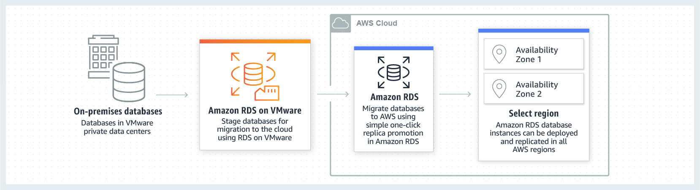

Test Report
Review questions
Jun 17, 2019 12:56AM EDT
 8 correct
8 correct 43 incorrect
43 incorrectYour answer
B. Use an existing on-premise DNS server to configure hostnames for internal DNS records. Create a new Amazon VPC DHCP Option Set with the internal DNS server's IP address.
C. Use an existing on-premise DNS server to configure hostnames for internal DNS records. Create a new Amazon VPC route tablee with the internal DNS server's IP address
D. Create an EC2 instance DNS server to configure hostnames for internal DNS records, Create a new Amazon VPC DHCP option set with the internal DNS server's IP address.
D. Create an EC2 instance DNS server to configure hostnames for internal DNS records, Create a new Amazon VPC DHCP option set with the internal DNS server's IP address.
Correct answer are B & D as the best option is to use DHCP option sets and use either a existing on-premise DNS server or EC2 instance DNS server.
Refer AWS Blog DNS resolution between on-premises and AWS
Option A is wrong as Internal Route 53 record sets would not work since Route 53 internal resource record sets only work for requests originating from within the VPC and currently cannot extend to on-premise. Also the application is an internal application. Using a public IP address would cause the application to route externally, which is not part of the desired architecture.
Option C is wrong as you need to create a DHCP option set and not a a VPC route tablee for host name resolution.
AWS SAP-C01 Question feedbackYour answer
B. You should use Gateway-Cached Volumes. You will have quicker access to the data, and it is a more preferred backup solution than Gateway-Stored volumes.
C. It doesn't matter whether you use Gateway-Cached volumes or Gateway-Stored volumes as long as you also combine either of these solutions with the Gateway-Virtual Tape Library (VTL).
D. You should use Gateway-Stored Volumes as it is preferable to Gateway-Cached Volumes as a backup storage medium.
Correct answer is D as the question mainly targets backup strategy, it would make sense to use Gateway Storage to have the backups in AWS while the data also resides on-premises. Gateway cached volume is mainly an actual storage option, where the entire data sits in AWS, which only the frequently accessed data on premises for low latency access.
Refer AWS documentation - Storage gateway
- Cached Volumes – You store your data in Amazon Simple Storage Service (Amazon S3) and retain a copy of frequently accessed data subsets locally. Cached volumes offer a substantial cost savings on primary storage and minimize the need to scale your storage on-premises. You also retain low-latency access to your frequently accessed data.
- Stored Volumes – If you need low-latency access to your entire data set, you can configure your on-premises gateway to store all your data locally and then asynchronously back up point-in-time snapshots of this data to Amazon S3. This configuration provides durable and inexpensive off-site backups that you can recover to your local data center or Amazon EC2. For example, if you need replacement capacity for disaster recovery, you can recover the backups to Amazon EC2.
Your answer
B. Add trusted signers to all behaviours on the CF distribution. Have the application generated signed URL's.
C. Use WAF and enable the websockets option to allow communications with the application directly. WebACL's can then block content based on the user profile field.
D. Adjust the application to not show any images when the user age is below 18.
Correct answer is B as trusted signers would make the distribution private and the sharing of data can be controlled using Signed urls, which can be generated only if the user is over 18 yrs old.
Refer AWS documentation - CloudFront Trusted Signers
To create signed URLs or signed cookies, you need at least one AWS account that has an active CloudFront key pair. This account is known as a trusted signer. The trusted signer has two purposes:
- As soon as you add the AWS account ID for your trusted signer to your distribution, CloudFront starts to require that users use signed URLs or signed cookies to access your files.
- When you create signed URLs or signed cookies, you use the private key from the trusted signer's key pair to sign a portion of the URL or the cookie. When someone requests a restricted file, CloudFront compares the signed portion of the URL or cookie with the unsigned portion to verify that the URL or cookie hasn't been tampered with. CloudFront also verifies that the URL or cookie is valid, meaning, for example, that the expiration date and time hasn't passed.
Option A is wrong as CloudFront does not have this feature.
Option C is wrong as WAF does not have this feature.
Option D is wrong as the images can be accessed directly is url known.
Your answer
B. Change the EIP (Elastic IP Address) of the NAT instance in the web tier subnet and update the Main Route table with the new EIP
C. Create 15 Security Group rules to block the attacking IP addresses over port 80
D. Create an inbound NACL (Network Access control list) associated with the web tier subnet with deny rules to block the attacking IP addresses
Correct answer is D as NACL can be used to deny access to the attacking IP address.
Refer AWS documentation - VPC NACLs
Option A is wrong as Route table cannot help block traffic but just define routes for traffic.
Option B is wrong as NAT is only for routing outgoing traffic and not incoming traffic.
Option C is wrong as Security Groups cannot help block/deny access.
Your answer
B. Have the mobile app access Amazon DynamoDB directly instead of JSON files stored on Amazon S3
C. Introduce an Amazon SQS queue to buffer writes to the Amazon DynamoDB table and reduce provisioned write throughput.
D. Introduce Amazon ElastiCache to cache reads from the Amazon DynamoDB table and reduce provisioned read throughput
E. Write data directly into an Amazon Redshift cluster replacing both Amazon DynamoDB and Amazon S3.
C. Introduce an Amazon SQS queue to buffer writes to the Amazon DynamoDB table and reduce provisioned write throughput.
Correct answers are A & C
Option A as it would help save on DynamoDB per GB charge, by creating the table for each day and discarding old data.
Option C as DynamoDB pricing is per provisioning and charged per hour and using SQS to buffer writes would help keep the provisioned write throughput down.
Refer AWS documentation - DynamoDB Pricing
Option B is wrong as the report once generated need not be generated again, it will introduce latency and if directly generated from DynamoDB, the cost would increase.
Option D is wrong as the reads are less as compared to writes, ElastiCache would not help cut cost down.
Option E is wrong as Redshift does not provide http endpoints for data insertion and provide interface using jdbc/odbc and is not suitable for high frequency data insertion.
Your answer
B. No. If the cache node fails the automated ElastiCache node recovery feature will prevent any availability impact.
C. Yes you should deploy the Memcached ElastiCache Cluster with two nodes in the same AZ as the RDS DB master instance to handle the load if one cache node fails.
D. No if the cache node fails you can always get the same data from the DB without having any availability impact.
Key point is here providing HA on overloaded database with mainly read operations performed on it
Correct answer is A
Refer to ElastiCache Best Practices
Mitigating Node Failures
To mitigate the impact of a node failure, spread your cached data over more nodes. Because Memcached does not support replication, a node failure will always result in some data loss from your cluster.
When you create your Memcached cluster you can create it with 1 to 20 nodes, or more by special request. Partitioning your data across a greater number of nodes means you’ll lose less data if a node fails. For example, if you partition your data across 10 nodes, any single node stores approximately 10% of your cached data. In this case, a node failure loses approximately 10% of your cache which needs to be replaced when a replacement node is created and provisioned.
Mitigating Availability Zone Failures
To mitigate the impact of an availability zone failure, locate your nodes in as many availability zones as possible. In the unlikely event of an AZ failure, you will lose only the data cached in that AZ, not the data cached in the other AZs.
Option B is wrong as it does not provide high availability, as data is lost if a cluster is lost and all the load would be on DB
Option C is wrong as Single AZ affects availability as DB is Multi AZ and would be overloaded is the AZ goes down
Option D is wrong as will overload the database affecting availability due to existing and additional load
AWS SAP-C01 Question feedbackPoints : 5 out of 5
Your answer
B. Configure your instances to use pre-set IP addresses with an IP address range every security zone. Configure NACL to explicitly allow or deny communication between the different IP address ranges, as required for interzone communication
C. Configure a security group for every zone. Configure allow rules only between zone that need to be able to communicate with one another. Use implicit deny all rule to block any other traffic
D. Configure multiple subnets in your VPC, one for each zone. Configure routing within your VPC in such a way that each subnet only has routes to other subnets with which it needs to communicate, and doesn't have routes to subnets with which it shouldn't be able to communicate.
C. Configure a security group for every zone. Configure allow rules only between zone that need to be able to communicate with one another. Use implicit deny all rule to block any other traffic
Correct answer are B & C as the communication can be controlled either using security group for all the instances in the zone or NACLs at the zone level.
Refer AWS documentation - VPC Security
Option B as NACLs can be used to configure rules with IP address to allow or deny traffic.
Option C as Security group can take IP address or security group and can allow them. Default is implicit deny
Option A is wrong as Security group does not allow deny rules
Option D is wrong as default routes are unmodifiable and cannot use routing table to determine routing between subnets in a VPC. in a VPC all subnets are reachable from all other subnets within the same VPC. That is the default behavior and cannot be changed.
AWS SAP-C01 Question feedbackYour answer
B. You can modify the options from the console or the CLI.
C. You must create a new set of DHCP options and associate them with your VPC.
D. You can modify the options from the CLI only, not from the console.
Refer to VPC DHCP Options
Correct answer is C as DHCP cannot be modified.
After you create a set of DHCP options, you can't modify them. If you want your VPC to use a different set of DHCP options, you must create a new set and associate them with your VPC. You can also set up your VPC to use no DHCP options at all.AWS SAP-C01 Question feedback
Your answer
B. When the users have submitted the bids from frontend, the backend service delivers the messages to a SQS standard queue.
C. Add a message group ID to the messages before they are sent to the SQS queue so that the message processing is in a strict order.
D. Use an EC2 or Lambda to add a deduplication ID to the messages before the messages are sent to the SQS queue to ensure that bids are processed in the right order.
C. Add a message group ID to the messages before they are sent to the SQS queue so that the message processing is in a strict order.
Correct answers are A & C as SQS FIFO Queues provide message ordering. Message Group Ids can be used for ordering with the same message group.
Refer AWS documentation - SQS FIFO Message Ordering
The FIFO queue improves upon and complements the standard queue. The most important features of this queue type are FIFO (First-In-First-Out) delivery and exactly-once processing:
- The order in which messages are sent and received is strictly preserved and a message is delivered once and remains available until a consumer processes and deletes it.
- Duplicates aren't introduced into the queue.
In addition, FIFO queues support message groups that allow multiple ordered message groups within a single queue.
Message Group ID - The tag that specifies that a message belongs to a specific message group. Messages that belong to the same message group are always processed one by one, in a strict order relative to the message group (however, messages that belong to different message groups might be processed out of order).
Option B is wrong as SQS standard queue does not guarantee message ordering.
Option D is wrong as deduplication ID is for preventing message to be processed duplicately but does not control ordering. Message Deduplication ID - The token used for deduplication of sent messages. If a message with a particular message deduplication ID is sent successfully, any messages sent with the same message deduplication ID are accepted successfully but aren't delivered during the 5-minute deduplication interval.
AWS SAP-C01 Question feedbackYour answer
B. Record the user’s Information in Amazon RDS and create a role in IAM with appropriate permissions. When the user uses their mobile app create temporary credentials using the AWS Security Token Service ‘AssumeRole’ function. Store these credentials in the mobile app’s memory and use them to access Amazon S3 Generate new credentials the next time the user runs the mobile app
C. Record the user’s Information In Amazon DynamoDB. When the user uses their mobile app create temporary credentials using AWS Security Token Service ‘AssumeRole’ function. Store these credentials in the mobile app’s memory and use them to access Amazon S3 Generate new credentials the next time the user runs the mobile app.
D. Create IAM user. Assign appropriate permissions to the IAM user Generate an access key and secret key for the IAM user, store them in the mobile app and use these credentials to access Amazon S3.
E. Create an IAM user. Update the bucket policy with appropriate permissions for the IAM user Generate an access Key and secret Key for the IAM user, store them In the mobile app and use these credentials to access Amazon S3.
Correct answer is C as you can maintain the info in DynamoDB and create a IAM role once with proper permissions. IAM role can be assumed by the application to access AWS service.
User login Assume a IAM role -> Call STS for temporary credentials -> Access S3
Key point here is to understand IAM Assume Role
Option B is wrong as although the option is similar to C and uses RDS. DynamoDB would be a better option as compared to RDS.
Option A, D & E are wrong as using the long term credentials for an IAM user that is being stored in the mobile app is not recommended
Your answer
B. The PEM keys will not be copied to the new region but the authorization keys will still be in the operating system of the AMI. You need to ensure when the new AMI is launched that it is launched with the same PEM key name.
C. The PEM keys will also be copied across; however, they will only work for users who have already accessed them in the old region. If you need new users to access the instances then new keys will need to be generated.
D. The PEM keys will also be copied across so you don't need to do anything except launch the new instance.
Correct answer is B as AWS does not maintain or store the PEM i.e. private keys. However, AWS also does not exclude the authorized_keys when creating an image, so they are bundled with the image, unless explicitly excluded, and would be copied over to the other region.
Refer AWS Migration AWS Resources to a New Region Whitepaper
SSH public keys are only stored per region; AWS does not copy or synchronize the configured customer SSH keys between regions. It is up to customers to determine if they will use separate SSH keys per region, or the same SSH keys in several regions. Note: You can log onto an existing Linux instance in the source region, obtain a copy of the public key (from ~/.ssh/authorized_keys), and import this into the destination region.
It is important to note that Auto Scaling launch configurations and AWS CloudFormation templates may refer to SSH keys using the key pair name. In this case, the user must take care to either update any Auto Scaling launch configuration or AWS CloudFormation template to use keys that are available in a new region, or deploy the public key with the same key pair name to the new region
Refer AWS documentation - AMI
We recommend using the --exclude <code>directory option on ec2-bundle-vol to skip any directories and subdirectories that contain secret information that you would not like to include in your bundle. In particular, exclude all user-owned SSH public/private key pairs and SSH authorized_keys files when bundling the image. The Amazon public AMIs store these in /root/.ssh for the root account, and /home/<code>user_name/.ssh/ for regular user accounts
Your answer
B. Configure Elastic Load Balancing session stickiness to use the app-specific session cookie.
C. Re-configure the load-testing software to re-resolve DNS for each web request.
D. Configure Elastic Load Balancing and Auto Scaling to distribute across us-west-2a and us-west-2b.
E. Use a third-party load-testing service which offers globally distributed test clients.
E. Use a third-party load-testing service which offers globally distributed test clients.
Correct answer is C & E
When Elastic Load Balancing scales, it updates the DNS record with the new list of IP addresses. To ensure that clients are taking advantage of the increased capacity, Elastic Load Balancing uses a TTL setting on the DNS record of 60 seconds. It is critical that you factor this changing DNS record into your tests. If you do not ensure that DNS is re-resolved or use multiple test clients to simulate increased load, the test may continue to hit a single IP address when Elastic Load Balancing has actually allocated many more IP addresses. Because your end users will not all be resolving to that single IP address, your test will not be a realistic sampling of real-world behavior.
Option A would not have any impact change.
Option B - changing the session stickiness would not resolve the issue but cause the traffic for the user to go to the same instance again
Option D - ELB would automatically distribute the traffic to both the subnets registered with it
AWS SAP-C01 Question feedbackYour answer
B. Use a CloudFront distribution with access log delivery to S3. Clicks should be recorded as query string GETs to the distribution. Reports are built and sent by periodically running EMR jobs over the access logs in S3.
C. Use API Gateway invoking Lambdas which PutRecords into Kinesis, and EMR running Spark performing GetRecords on Kinesis to scale with spikes. Spark on EMR outputs the analysis to S3, which are sent out via email.
D. Use AWS Elasticsearch service and EC2 Auto Scaling groups. The Autoscaling groups scale based on click throughput and stream into the Elasticsearch domain, which is also scalable. Use Kibana to generate reports periodically.
Key point here is clickstream batch analysis for large global data only once per week
Correct answer is B as CloudFront is a Gigabit-Scale HTTP(S) global request distribution service and works fine with peaks higher than 10 Gbps or 15,000 RPS. It can handle scale, geo-spread, spikes, and unpredictability. Access Logs will contain the GET data. EMR can be used for batch analysis
Other streaming options are expensive as not required as the need is to batch analyze
Option A is wrong as Redshift is more of Data Warehousing solution and with lambda not needed as it is more of an batch analytics solution
Option C is wrong as Lambdas with Kinesis is more for streaming real time data.
Option D is wrong as Elasticsearch is more of an search solution and not batch analytics
AWS SAP-C01 Question feedbackYour answer
B. ScheduleRoleLambda should have a policy for CloudWatch Logs including CreateLogGroup, CreateLogStream and PutLogEvents.
C. To grant invoke permission from the API gateway, a permission is needed to the permissions policy associated with your Lambda function
D. sns:publish allow inline policy should be added into ScheduleRoleLambda for error handlings. For example, when exception appears, the message can be put into a dead letter queue via SNS publish
E. ScheduleRoleLambda should contain an inline policy to allow DynamoDB access. The resource should be "*" and the action should contain dynamodb:FetchItem, dynamodb:PutItem and dynamodb:Query.
F. An inline policy to allow DynamoDB access is needed for ScheduleRoleLambda. The resource should be the ARN of UserScheduleData and the action should contain dynamodb:GetItem and dynamodb:PutItem.
C. To grant invoke permission from the API gateway, a permission is needed to the permissions policy associated with your Lambda function
F. An inline policy to allow DynamoDB access is needed for ScheduleRoleLambda. The resource should be the ARN of UserScheduleData and the action should contain dynamodb:GetItem and dynamodb:PutItem.
Correct answers are B, C & F.
Option B as it provides Lambda the permissions to integrate with CloudWatch for logs and metrics
Option C as it provides API Gateway the permission to call Lambda functions
Option F as it provides Lambda the permission to interact with DynamoDB.
Refer AWS documentation - API Gateway + Lambda + DynamoDB example
{
"Version": "2012-10-17",
"Statement": [
{
"Sid": "Stmt1428341300017",
"Action": [
"dynamodb:DeleteItem",
"dynamodb:GetItem",
"dynamodb:PutItem",
"dynamodb:Query",
"dynamodb:Scan",
"dynamodb:UpdateItem"
],
"Effect": "Allow",
"Resource": "*"
},
{
"Sid": "",
"Resource": "*",
"Action": [
"logs:CreateLogGroup",
"logs:CreateLogStream",
"logs:PutLogEvents"
],
"Effect": "Allow"
}
]
}
Option A is wrong as XRay is needed only if you want to trace the Lambda functions.
Option D is wrong as SNS is needed only if the Lambda function needs to publish any notifications.
Option E is wrong as the permission should be granted for GetItem and FetchItem does not exist. Also, inline with the principle of least privilege, the ARN should be specific and not to all i.e. *.
Your answer
B. Migrate to AWS Use VM Import/Export to quickly convert an on-premises web server to an AMI create an Auto Scaling group, which uses the imported AMI to scale the web tier based on incoming traffic Create an RDS read replica and setup replication between the RDS instance and on-premises MySQL server to migrate the database.
C. Failover environment: Create an S3 bucket and configure it tor website hosting Migrate your DNS to Route53 using zone (lie import and leverage Route53 DNS failover to failover to the S3 hosted website.
D. Hybrid environment Create an AMI which can be used of launch web servers in EC2 Create an Auto Scaling group which uses the * AMI to scale the web tier based on incoming traffic Leverage Elastic Load Balancing to balance traffic between on-premises web servers and those hosted in AWS.
Key point here to improve scaling within a short timeframe.
Correct answer is A as company announcement means users access the same data again and it would make sense to cache the data using CloudFront reducing load on the existing infrastructure.
Option B is wrong as a full migration is never short and would take time to replicate the environment on AWS, also doubling the cost.
Option C is wrong as S3 bucket won't be able to handle web application functionality
Option D is wrong as a replication of environment would take time
AWS SAP-C01 Question feedbackPoints : 5 out of 5
Your answer
B. Replicate the local database into a RDS read replica. Place master node into a Cross-Zone ELB with a minimum of one and maximum of one with health checks.
C. Migrate the local database into multi-AWS RDS database. Place master node into a Cross-Zone ELB with a minimum of one and maximum of one with health checks.
D. Replicate the local database into a RDS read replica. Place master node into a multi-AZ auto-scaling group with a minimum of one and maximum of one with health checks.
Correct answer is A as Multi-AZ RDS and auto scaling group with min and max of 1 would provide HA as the key point here is self healing architecture
Option B & D are wrong as Read Replica does not provide HA and write capability
Option B & C are wrong as ELB does not have feature for Min and Max 1 and Cross Zone allows just the equal distribution of load across instances
Points : 5 out of 5
Your answer
B. Configure your Direct Connect router with a higher BGP priority than your VPN router, verify network traffic is leveraging Direct Connect and then delete your existing VPN connection.
C. Update your VPC route tables to point to the Direct Connect connection configure your Direct Connect router with the appropriate settings verify network traffic is leveraging Direct Connect and then delete the VPN connection.
D. Configure your Direct Connect router, update your VPC route tables to point to the Direct Connect connection, configure your VPN connection with a higher BGP priority. And verify network traffic is leveraging the Direct Connect connection
Correct answer is C
Refer to the Route table priority & Direct Connect reinvent video
If you've attached a virtual private gateway to your VPC and enabled route propagation on your route table, routes representing your VPN connection automatically appear as propagated routes in your route table. The following applies: - If any propagated routes from a VPN connection or AWS Direct Connect connection overlap with the local route for your VPC, the local route is most preferred even if the propagated routes are more specific. - If any propagated routes from a VPN connection or AWS Direct Connect connection have the same destination CIDR block as other existing static routes (longest prefix match cannot be applied), we prioritize the static routes whose targets are an Internet gateway, a virtual private gateway, a network interface, an instance ID, a VPC peering connection, a NAT gateway, or a VPC endpoint. If you have overlapping routes within a VPN connection and longest prefix match cannot be applied, then we prioritize the routes as follows in the VPN connection, from most preferred to least preferred: - BGP propagated routes from an AWS Direct Connect connection - Manually added static routes for a VPN connection - BGP propagated routes from a VPN connection
Your answer
B. Configure the web application to authenticate end-users against the centralized access management system. Have the web application provision trusted users STS tokens entitling the download of approved data directly from Amazon S3
C. Have the separate security team create and IAM role that is entitled to access the data on Amazon S3. Have the web application team provision their instances with this role while denying their IAM users access to the data on Amazon S3
D. Configure the web application to authenticate end-users against the centralized access management system using SAML. Have the end-users authenticate to IAM using their SAML token and download the approved data directly from S3.
Key point here is knowing IAM Identity Providers and Federation and Access separation - the access should be through centralized access management system controlled by separate team with application users not having access to the data
Correct answer is B as it meets the authentication requirement and as the application generates temporary credentials only upon authentication, the application team cannot access the data even if they have EC2 access.
Option A is wrong as S3 doesn’t integrate directly with CloudHSM, also there is no centralized access management system control. Integration with the HSM means that the HSM client is installed on the instance and is registered/trusted and authorized to perform cryptographic operations, so during the decryption process the data will be stored unencrypted on the instance for the user to download via the web app
Option C is wrong as the web team would still have access to the data and the EC2 instance is configured with the IAM role
Option D is wrong as this is not the way SAML auth works as authentication data should be exchanged between the IDP (access management system) and the SP (AWS), to achieve SSO without user intervention
AWS SAP-C01 Question feedbackYour answer
B. A web tier deployed across 2 AZs with 3 EC2 (Elastic Compute Cloud) instances in each AZ inside an Auto Scaling Group behind an ELB (elastic load balancer) and an application tier deployed across 2 AZs with 3 EC2 instances in each AZ inside an Auto Scaling Group behind an ELB and a Multi-AZ RDS (Relational Database Service) deployment.
C. A web tier deployed across 2 AZs with 3 EC2 (Elastic Compute Cloud) instances in each AZ inside an Auto Scaling Group behind an ELB (elastic load balancer) and an application tier deployed across 2 AZs with 6 EC2 instances in each AZ inside an Auto Scaling Group behind an ELB and one RDS (Relational Database Service) Instance deployed with read replicas in the other AZs.
D. A web tier deployed across 1 AZs with 6 EC2 (Elastic Compute Cloud) instances in each AZ Inside an Auto Scaling Group behind an ELB (elastic load balancer). And an application tier deployed in the same AZs with 6 EC2 instances inside an Auto scaling group behind an ELB and a Multi-AZ RDS (Relational Database services) deployment, with 6 stopped web tier EC2 instances and 6 stopped application tier EC2 instances all in the other AZ ready to be started if any of the running instances in the first AZ fails.
Key point here is to provide fault tolerance, and not HA, so minimal 6 servers should always be running, no cost constraints.
Correct answer is A as running 6 instances in two AZs would provide the fault tolerance even if a single AZ goes down
Option B, C & D are wrong as when a single AZ goes down it would take some time for the instances to come up to maintain the minimal 6 instances.
Points : 5 out of 5
Your answer
B. Tag the instance with a production-identifying tag and modify the employees group to allow only start, stop, and reboot api calls and not the terminate instance call.
C. Modify the IAM policy on the user to require MFA before deleting EC2 instances and disable MFA access to the employee
D. Modify the IAM policy on the user to require MFA before deleting EC2 instances
B. Tag the instance with a production-identifying tag and modify the employees group to allow only start, stop, and reboot api calls and not the terminate instance call.
Correct answer are A & B as the restrictions can be added by tagging the instances and either explicitly allowing the user to start/stop but not terminate the instances or denying user to terminate the instance.
Option C & D are wrong as MFA will not prevent the user from terminating the instance, but just adds and additional layer of security.
AWS SAP-C01 Question feedbackYour answer
B. Deploy 3 EC2 instances in one region and 3 in another region and use Amazon Elastic Load Balancer.
C. Deploy 3 EC2 instances in one availability zone and 3 in another availability zone and use Amazon Elastic Load Balancer.
D. Deploy 2 EC2 instances in three regions and use Amazon Elastic Load Balancer.
Correct answer is C as auto scaling with 3 EC2 instances in 2 AZs will provide High Availability and ELB will provide equal distribution of traffic on all instances
Option A is wrong as single AZ will not provide High Availability
Option B & D are wrong as the instances are in different region, AMI would not be available unless copied. Also ELB is a regional service and cannot distribute load to instances across region.
AWS SAP-C01 Question feedbackYour answer
B. Make sure that the security group of EC2 instances has opened the port 443 for SSL traffic.
C. Create mount targets for EFS volumes before mounting in the virtual private cloud (VPC) availability zones of EC2 instances
D. Create mount targets for EFS volumes after mounting in the virtual private cloud (VPC) availability zones of EC2 instances
E. In the EC2’s subnets, create a rule in network ACL to allow HTTPS traffic so that encryption in transit between EC2 and EFS file system is allowed
F. When the mount helper utility is used, add the encryption option that is -o tls
C. Create mount targets for EFS volumes before mounting in the virtual private cloud (VPC) availability zones of EC2 instances
F. When the mount helper utility is used, add the encryption option that is -o tls
Correct answers are A, C & F
Refer AWS documentation - EFS mounting using mount helper
Mounting on Amazon EC2 with the EFS Mount Helper
You can mount an Amazon EFS file system on an Amazon EC2 instance using the Amazon EFS mount helper. To use the mount helper, you need the following:
- An Amazon EFS file system ID – After you create an Amazon EFS file system, you can get that file system's ID from the console or programmatically through the Amazon EFS API. This ID is in this format:
fs-12345678. - An Amazon EFS mount target – You create mount targets in your virtual private cloud (VPC). If you create your file system in the console, you create your mount targets at the same time.
- An Amazon EC2 instance running a supported distribution of Linux – The supported Linux distributions for mounting your file system with the mount helper are Amazon Linux 2, Amazon Linux 2017.09 and newer, Red Hat Enterprise Linux (and derivatives such as CentOS) version 7 and newer, and Ubuntu 16.04 LTS and newer.
- The Amazon EFS mount helper installed – The mount helper is a tool in amazon-efs-utils.
Options B & E are wrong as Security Groups and ACLs are not required for enabling encryption in transit.
Option D is wrong as the mount targets should be created before the mounting.
AWS SAP-C01 Question feedbackYour answer
B. Create a new organization with all features enabled. Create two new organizational units (OUs): one for production accounts and one for non-production accounts. In the new organization, create an IAM role that is applied to each sub-account in production that will deny access to services that are not approved.
C. Create a new organization with all features enabled. Create two new organizational units (OUs): one for production accounts and one for non-production accounts. In the new organization, create an SCP that will deny access to services that are not approved and apply the SCP to the production OU.
D. Create a new organization with consolidated billing enabled. Create two new organizational units (OUs): one for production accounts and one for non-production accounts. In the new organization, create an SCP that will deny access to services that are not approved and apply the SCP to the production OU.
Correct answer is C as you need to create an Organizations with All Features Enabled. SCP can be used to control the access.
Refer AWS documentation - Organizations
AWS Organizations is an account management service that enables you to consolidate multiple AWS accounts into an organization that you create and centrally manage. AWS Organizations includes account management and consolidated billing capabilities that enable you to better meet the budgetary, security, and compliance needs of your business. As an administrator of an organization, you can create accounts in your organization and invite existing accounts to join the organization.
As an administrator of the master account of an organization, you can use service control policies (SCPs) to specify the maximum permissions for member accounts in the organization. In SCPs, you can restrict which AWS services, resources, and individual API actions the users and roles in each member account can access. You can also define conditions for when to restrict access to AWS services, resources, and API actions. These restrictions even override the administrators of member accounts in the organization. When AWS Organizations blocks access to a service, resource, or API action for a member account, a user or role in that account can't access it, even if an administrator of a member account explicitly grants such permissions in an IAM policy.
Options A & D are wrong as you need to use All Features to use SCP.
Options A & B are wrong as IAM role cannot be used to control access centrally.
AWS SAP-C01 Question feedbackYour answer
B. Use CloudTrail to send all API calls to CloudWatch and send an email to the security officer every time an API call is made. Make sure the emails are encrypted
C. Use CloudTrail to log all events to one S3 bucket. Make this S3 bucket only accessible by your security officer with a bucket policy that restricts access to his user only and also add MFA to the policy for a further level of security
D. Use CloudTrail to log all events to an Amazon Glacier Vault. Make sure the vault access policy only grants access to the security officer's IP address.
Key point here consolidated API activity tracking
Correct answer is C as APIs can be logged into a single access controlled S3 bucket with additional MFA security
Option A is wrong as not an ideal solution to create 3 different buckets
Option B is wrong as CloudTrail is used for tracking and not sending API calls to CloudWatch
Option D is wrong as Glacier is not an ideal storage solution here, as it is more of an archival solution.
AWS SAP-C01 Question feedbackYour answer
B. Define a deletion policy of type Snapshot for the Amazon RDS resource to assure that the RDS database can be restored after the AWS CloudFormation stack is deleted.
C. Define automated backups with a backup retention period of 30 days for the Amazon RDS database and perform point-in-time recovery of the database after the AWS CloudFormation stack is deleted.
D. Define an Amazon RDS Read-Replica in the load-testing AWS CloudFormation stack and define a dependency relation between master and replica via the DependsOn attribute.
E. Define an update policy to prevent deletion of the Amazon RDS database after the AWS CloudFormation stack is deleted
B. Define a deletion policy of type Snapshot for the Amazon RDS resource to assure that the RDS database can be restored after the AWS CloudFormation stack is deleted.
Correct answer are A & B as with Deletion policy you can specify either Retain, to prevent the resource from getting deleted OR snapshot to create a snapshot before the resource is deleted, so that it can be restored.
Refer AWS documentation - CloudFormation Resource Attribute Reference
With the DeletionPolicy attribute you can preserve or (in some cases) backup a resource when its stack is deleted. You specify a DeletionPolicy attribute for each resource that you want to control. If a resource has no DeletionPolicy attribute, AWS CloudFormation deletes the resource by default.
To keep a resource when its stack is deleted, specify Retain for that resource. You can use retain for any resource. For example, you can retain a nested stack, S3 bucket, or EC2 instance so that you can continue to use or modify those resources after you delete their stacks.
For resources that support snapshots, such as AWS::RDS::DBInstance and AWS::EC2::Volume, you can specify Snapshot to have AWS CloudFormation create a snapshot before deleting the resource.
Option C is wrong as the environment is required for limited time the automated backup will not serve the purpose and they would be deleted when the resource is deleted.
Option D is wrong as read replica not needed and will be deleted when the stack is deleted
Option E is wrong as UpdatePolicy does not apply to RDS
Your answer
B. Sync the application data to Amazon S3 starting a week before the migration, on Friday morning perform a final sync, and copy the entire data set to your AWS file server after the sync completes.
C. Copy the application data to a 1-TB USB drive on Friday and immediately send overnight, with Saturday delivery, the USB drive to AWS Import/Export to be imported as an EBS volume, mount the resulting EBS volume to your AWS file server on Sunday.
D. Leverage the AWS Storage Gateway to create a Gateway-Stored volume. On Friday copy the application data to the Storage Gateway volume. After the data has been copied, perform a snapshot of the volume and restore the volume as an EBS volume to be attached to your AWS file server on Sunday.
Key point is migration needs to happen within weekend - 48 hrs to minimize user downtime and only 5-10 % files are modified per day
Correct answer is B as it works best as the data changes can be propagated over the week and are fractional and downtime would be know
Option A is wrong as S3 multipart upload will still use the internet and as it does not start before would not be completed in time.
Option C is wrong as downtime is not known when the data upload would be done, although Amazon says the data will be upload next business day. Would work best if the import/export is done for initial data upload beforehand and the changes are handle incrementally.
Option D is wrong as Storage Gateway will still use the internet and as it does not start before would not be completed in time.
AWS SAP-C01 Question feedbackYour answer
B. Create your RDS instance separately and add its IP address to your application’s DB connection strings in your code. Alter its security group to allow access to it from hosts within your VPC’s IP address block.
C. Create your RDS instance separately and pass its DNS name to your app’s DB connection string as an environment variable. Create a security group for client machines and add it as a valid source for DB traffic to the security group of the RDS instance itself.
D. Create your RDS instance separately and pass its DNS name to your DB connection string as an environment variable. Alter its security group to allow access to it from hosts in your application subnets.
Key point here is optimal setup for persistence and security
Correct answer is C as security group to the client machines allows instances to access the RDS with new instances launched without any changes
Refer to AWS documentation for Elastic Beanstalk managing DB
A database instance that is part of your environment is tied to the lifecycle of your environment. If you terminate the environment, the database instance is terminated as well. An integrated database instance also cannot be removed from your environment once added.
Option A is wrong as it is not optimal for persistence as the RDS is associated with the Elastic Beanstalk lifecycle and would not live independently
Option B is wrong as RDS can only be connected using DNS endpoint only and not IP address
Option D is wrong as the solution is not optimal for security as it needs adding individual hosts everytime
Your answer
B. Take frequent snapshots of EBS volumes, create a volume from an EBS snapshot, attach the EBS volume to the EC2 instance at a different mount location, copy the file from the backup and cutover the application to look at the new backup volume and remove the old volume
C. Take frequent snapshots of EBS volumes, create a volume from an EBS snapshot, attach the EBS volume to the EC2 instance at a different mount Location, browse the file system to the file that needs to be restored on the new mount, copy from the backup volume
D. Enable auto snapshots on Amazon EC2 and restore the EC2 instance upon single file failure
Key point here is the RTO of 15 mins and RPO is several hours, which means it is fine to lose changes to the individual file for several hours but the recovery needs to be fast
Correct answer is C as you can take periodic EBS snapshots can help backup the files. It can be mounted as a new volume and the file copied over to the actual volume.
Option A is wrong as storing and retrieving the files in S3 is cumbersome and depending upon file size and count might not match the RTO.
Option B is wrong as a complete cut over to the backup volume will cause the other files to lose the data as well.
Option D is wrong as the snapshots are taken for EBS volumes
Your answer
B. Add an Amazon ElastiCache caching layer to your application for storing sessions and frequent DB queries
C. Configure Amazon CloudFront dynamic content support to enable caching of re-usable content from your site
D. Switch Amazon RDS database to the high memory extra large Instance type
E. Set up a second installation in another region, and use the Amazon Route 53 latency-based routing feature to select the right region.
C. Configure Amazon CloudFront dynamic content support to enable caching of re-usable content from your site
D. Switch Amazon RDS database to the high memory extra large Instance type
Key point is to improve page load times, and its a read only site with updates every 15 minutes.
Correct answer is B, C and D implements caching using ElastiCache for DB, CloudFront for dynamic content and Scale out the RDS database. CloudFront would be better with its Global Edge locations
Option A is wrong as auto scaling will increase the instances but not help reduce load on DB and nor serve requests faster.
Option E is wrong as second installation would increase cost and would not help worldwide audience as it is still latency based.
AWS SAP-C01 Question feedbackYour answer
B. Have users create a cross-account lAM role with a policy that grants read-only access to the Amazon S3 bucket required by your application to the AWS account ID running your production Sass application.
C. Have users create an Amazon S3 bucket policy that grants read-only access to the Amazon S3 bucket required by your application, and securely store the corresponding access keys in the database holding their account data.
D. Have users create an Amazon S3 bucket policy that grants read-only access to the Amazon S3 bucket required by your application and limits access to the public IP address of the SaaS application.
Correct answer is B as an Cross Account access using IAM role helps provides secure access to the application hosting SaaS application to the account hosting the customer data.
Refer AWS documentation - Cross Account with IAM Roles
Option A is wrong as creating a single IAM user and storing keys is not a best practice.
Option C is wrong as storing access keys is not a best practice
Option D is wrong as limiting the access to public IP address would increase risk as it might change.
AWS SAP-C01 Question feedbackYour answer
B. Use the HTTPS endpoint of the DynamoDB to make sure all the communication is secure
C. Connect your on-premise network to AWS using the VPN to access the DynamoDB via the VPC endpoints
D. Run your application using auto-scaling and provision higher read/write capacity to the DynamoDB tables
E. Use the VPC gateway endpoint to connect with your DynamoDB, provide the endpoint to your application configuration
F. Enable the encryption at rest option to make sure all the data stored in the DynamoDB is secure
E. Use the VPC gateway endpoint to connect with your DynamoDB, provide the endpoint to your application configuration
Correct answers are A & E as to keep the application and integration secure and scalable, the application can be moved to EC2 (and then to Auto Scaling for scalability) and a VPC Gateway Endpoint would provide a secure and private communication channel.
Refer AWS documentation - VPC Endpoints
A VPC endpoint enables you to privately connect your VPC to supported AWS services and VPC endpoint services powered by PrivateLink without requiring an internet gateway, NAT device, VPN connection, or AWS Direct Connect connection. Instances in your VPC do not require public IP addresses to communicate with resources in the service. Traffic between your VPC and the other service does not leave the Amazon network.
Endpoints are virtual devices. They are horizontally scaled, redundant, and highly available VPC components that allow communication between instances in your VPC and services without imposing availability risks or bandwidth constraints on your network traffic.
A gateway endpoint is a gateway that is a target for a specified route in your route table, used for traffic destined to a supported AWS service. The following AWS services are supported:
- Amazon S3
- DynamoDB
Option B is wrong as HTTPS would not provide a E2E security as compared to VPC endpoints.
Option C is wrong as VPC Endpoints work with resources accessing from with a VPC.
Option D is wrong as provisioning higher throughput would increase the cost.
Option F is wrong as encryption at rest does not make the communication between application and DynamoDB secure.
AWS SAP-C01 Question feedbackYour answer
B. A video transcoding pipeline running on EC2 using SQS to distribute tasks and Auto Scaling to adjust the number or nodes depending on the length of the queue S3 to host videos with Lifecycle Management to archive all files to Glacier after a few days CloudFront to serve HLS transcoding videos from Glacier
C. Elastic Transcoder to transcode original high-resolution MP4 videos to HLS EBS volumes to host videos and EBS snapshots to incrementally backup original rues after a few days. CloudFront to serve HLS transcoded videos from EC2.
D. A video transcoding pipeline running on EC2 using SQS to distribute tasks and Auto Scaling to adjust the number of nodes depending on the length of the queue. EBS volumes to host videos and EBS snapshots to incrementally backup original files after a few days. CloudFront to serve HLS transcoded videos from EC2
Key here the cost efficient solution with company needing video transcoding expertise and needing to hire a consultant with global distribution.
Correct answer is A as Elastic Transcoder provides and out of box option to transcode videos into any format without any expertise. S3 to host videos and CloudFront to serve HLS transcoded videos for global distribution while being cost efficient
Option B & D are wrong as a video transcoding pipeline with instances would increae the cost needing expertise as well as infrastructure
Option C & D are wrong as EBS volumes to host data with snapshots would increase the cost.
AWS SAP-C01 Question feedbackPoints : 5 out of 5
Your answer
B. Add additional cc2.8xlarge instances by introducing a task group.
C. Use smaller instances that have higher aggregate I/O performance.
D. Create fewer, larger files on Amazon S3.
Key point here is to reduce cost and CPU are mostly idle during processing which means they are oversized.
Correct answer is C as smaller instances can provide higher aggregate I/O performance and be utilized as well and help reduce cost.
Refer to EMR FAQs
As a general guideline, we recommend that you limit 60% of your disk space to storing the data you will be processing, leaving the rest for intermediate output. Hence, given 3x replication on HDFS, if you were looking to process 5 TB on m1.xlarge instances, which have 1,690 GB of disk space, we recommend your cluster contains at least (5 TB * 3) / (1,690 GB * .6) = 15 m1.xlarge core nodes. You may want to increase this number if your job generates a high amount of intermediate data or has significant I/O requirements.
Option A & D does not reduce utilization
AWS SAP-C01 Question feedbackYour answer
B. The HTTPS certificate is expired or missing a third party signer. To resolve this purchase and add a new SSL certificate.
C. The origin on the CloudFront distribution is the wrong origin.
D. TCP HTTPS isn't configured on the CloudFront distribution but is configured on the CloudFront origin.
Correct answer is A as the error usually happens when the Origin Protocol Policy is set to Match Viewer and HTTPS isn't configured on the origin.
Refer AWS Forum entry
AWS SAP-C01 Question feedbackPoints : 5 out of 5
Your answer
B. In RDS console, click “migrating the instance” to create a new RDS instance. Then create a new read replica in the ap-southeast-1 region
C. Promote the RDS read replica in ap-south-1 to be the new RDS instance. Create another read replica in ap-southeast-1 for this new instance
D. Create another read replica in ap-southeast-1 region to share the read traffic for the RDS instance on VMware. Promote the RDS read replica in ap-south-1 to be the new RDS instance so that the original on-premise database is migrated in AWS with a replica in ap-southeast-1.
Correct answer is C as RDS VMware allows for one-click migration using replica promotion.
Refer AWS documentation - RDS VMware
Through simple one-click replication, your Amazon RDS on VMware database instances can be migrated to Amazon RDS database instances in AWS. Databases can be migrated with no impact to uptime, giving you the ability to rapidly deploy databases in all AWS regions without interrupting your customer experience.

Option A is wrong as Data Migration Service is not needed
Option B is wrong as migrating the instance is not needed and it can be achieved using replication promotion.
Option D is wrong as the Read replica must be created after the database is migrated to AWS and from the instance which is promoted to primary.
Your answer
B. Create an ES Domain
C. Create an IAM Role for Elasticsearch.
D. Create a metric for Elasticsearch that CloudWatch can use.
Correct answer is B as before you begin you need to create ES domain.
Refer AWS documentation - CloudWatch logs Elasticsearch Stream
You can configure a CloudWatch Logs log group to stream data it receives to your Amazon Elasticsearch Service (Amazon ES) cluster in near real-time through a CloudWatch Logs subscription.
Before you begin, create an Amazon ES domain. The Amazon ES domain can have either public access or VPC access, but you cannot then modify the type of access after the domain is created. You might want to review your Amazon ES domain settings later, and modify your cluster configuration based on the amount of data your cluster will be processing.
Your answer
B. You have not allocated enough storage to the EC2 instance running me proxy so the network buffer is filling up causing some requests to fall
C. You are running the proxy in a public subnet but have not allocated enough EIPs lo support the needed network throughput through the Internet Gateway (IGW)
D. You are running the proxy on a affluently-sized EC2 instance in a private subnet and its network throughput is being throttled by a NAT running on an undersized EC2 instance
E. The route table for the subnets containing the affected EC2 instances is not configured to direct network traffic for the software update locations to the proxy.
D. You are running the proxy on a affluently-sized EC2 instance in a private subnet and its network throughput is being throttled by a NAT running on an undersized EC2 instance
Correct answer is A & D - as the network is the bottleneck as all the instances are trying to download the patch at the same time, the only reasons can be either the proxy does not have enough capacity to handle all the request or either the instances are hosted in the private subnet with the traffic being routed through the NAT instance which does not have enough capacity
Option B is wrong as storage does not impact the network performance
Option C is wrong as EIPs are not needed for network throughput
Option E is wrong as the configuration would cause those instances to always fail
Your answer
B. Use DynamoDB with a “Calls” table and a Global Secondary Index on a “IsActive'” attribute that is present for active calls only In this way the Global Secondary index is sparse and more effective.
C. Use DynamoDB with a ‘Calls” table and a Global secondary index on a ‘State” attribute that can equal to “active” or “terminated” in this way the Global Secondary index can be used for all Items in the table.
D. Use RDS Multi-AZ with a “CALLS” table and an Indexed “STATE* field that can be equal to ‘ACTIVE” or – TERMINATED” In this way the SOL query Is optimized by the use of the Index
Key point is to minimize cost.
Correct answer is B as it is more cost effective than C, since the Global Secondary Index only contains active calls.
GSI index does not require the indexed attributes to be unique and are sparse indexes, so it would hold only active calls as the value does not exist for inactive calls
Options A and D are wrong as RDS would cost more as well as would not be a durable option.
Your answer
B. Use the root account for managing the resources attached to OpsWorks.
C. Application developers need to access only the stacks that run their applications.
D. Users should only have access permission to the resources they need as part of the OpsWorks stack.
E. Create single IAM user for all the users with all the permissions except billing
C. Application developers need to access only the stacks that run their applications.
D. Users should only have access permission to the resources they need as part of the OpsWorks stack.
Correct answer are A, C & D
Option A as root credentials should never be used as they have all permissions, it is a better practice is to create an IAM User with appropriate policies attached to it.
Option C as developers should not have access to stacks pertaining to any other applications than the ones they should be working on.
Option D as users should have access to only those resources that pertain to the application they are working on.
Refer AWS documentation - IAM Best Practices
Option B is wrong because using the root account credentials is not a secure and recommended practice.
Option E is wrong as it is ideal to create different IAM users with proper permissions
AWS SAP-C01 Question feedbackYour answer
B. Use Amazon S3 server-side encryption with customer-provided keys
C. Use Amazon S3 server-side encryption with EC2 key pair.
D. Use Amazon S3 bucket policies to restrict access to the data at rest.
E. Encrypt the data on the client-side before ingesting to Amazon S3 using their own master key
F. Use SSL to encrypt the data while in transit to Amazon S3.
B. Use Amazon S3 server-side encryption with customer-provided keys
E. Encrypt the data on the client-side before ingesting to Amazon S3 using their own master key
Correct answer are A, B & E
Refer to the AWS S3 Protecting Data using Encryption
Data at rest encryption using S3 can be implemented using either Server Side or Client Side encryption. SSE can be implemented using either KMS provided keys (SSE-KMS) or Customer provided keys (SSE-C). CSE can be implemented by encrypting the data before uploading it to S3 and then decrypting the data after downloading it from S3 at client side.
Option C is wrong as server side encryption does't work with EC2 key pair
Option D is wrong as bucket policies are just to restrict access to S3
Option F is wrong as it targets the data in transit only.
AWS SAP-C01 Question feedbackYour answer
B. Use the S3 Copy API to copy recently accessed content to multiple regions and serve user content from S3, CloudFront with dynamic content and an ELB in each region Retrieve user preferences from an ElastiCache cluster in each region and leverage SNS notifications to propagate user preference changes to a worker node in each region.
C. Use the S3 Copy API to copy recently accessed content to multiple regions and serve user content from S3, CloudFront and Route53 latency-based routing between ELBs in each region. Retrieve user preferences from a DynamoDB table and leverage SQS to capture changes to user preferences with SQS workers for propagating DynamoDB updates.
D. Serve user content from S3, CloudFront with dynamic content, and an ELB in each region Retrieve user preferences from an ElastiCache cluster in each region and leverage Simple Workflow (SWF) to manage the propagation of user preferences from a centralized DB to each ElastiCache cluster.
Key point here is running application in multiple regions and propagate user preferences across region with low latency
Correct answer is A as most recently accessed content can be served through S3, CloudFront and Route 53 with latency based routing. SQS can be used to propagate changes across region and update
Option B and C are wrong as using the S3 copy api would need to query S3 for the recently accessed content which would be slower.
Option D is wrong as using a centrailzed DB would be a bottleneck. SWF is not an ideal choice, AWS data pipeline would make as it can work with resources across region.
Points : 5 out of 5
Your answer
B. End-to-end Identity authentication
C. Data encryption across the Internet
D. Protection of data in transit over the Internet
E. Peer identity authentication between VPN gateway and customer gateway
F. Data integrity protection across the Internet
D. Protection of data in transit over the Internet
E. Peer identity authentication between VPN gateway and customer gateway
F. Data integrity protection across the Internet
Correct answer is C, D, E & F
Option C, D and F as by establishing a VPN tunnel between VPC and your on-perm gateway does not achieve that, the traffic before entering and after exiting the VPN tunnel will not be encrypted.
Option E as the two gateway will authenticate each other prior to form the VPN tunnel.
Option A & B are wrong as IPSec tunnels to do not provide anything End-to-End and the service is between gateways only.
AWS SAP-C01 Question feedbackYour answer
B. Copy any required AMIs from the first Region to the second Region.
C. Write an AWS Lambda function in the second Region that increases the desired capacity of the Auto Scaling group to four. Subscribe the function to the health check alarm SNS topic.
D. Write an AWS Lambda function in the second Region that promotes the read replica RDS DB instance to a standalone DB instance. Subscribe the function to the health check alarm SNS topic.
E. Change the permissions on any required AMIs in the first Region to allow them to be accessed from the second Region.
D. Write an AWS Lambda function in the second Region that promotes the read replica RDS DB instance to a standalone DB instance. Subscribe the function to the health check alarm SNS topic.
Correct answers are C & D
Option C as the Auto Scaling desired capacity should be increased to 4 to target steady traffic, in case of an failure
Option D to promote the Read Replica to Primary instance, in case of an failure
Option A as the CloudFormation template has already been used to create a stack in the second region.
Option B is wrong as the SA has already updated the CloudFormation template with AMIs mapping.
Option E is wrong as AMI are regional and need to be copied across regions.
AWS SAP-C01 Question feedbackYour answer
B. Keep the NAT gateway and create a VPC S3 endpoint which allows for higher bandwidth throughput as well as tighter security
C. NAT gateways support 10Gbps and two are running: No changes are required to improve this architecture.
D. Remove the NAT gateway and create a VPC S3 endpoint which allows for higher bandwidth throughput as well as tighter security.
Correct answer is B as VPC S3 endpoint can be used for direct S3 interaction
A VPC endpoint enables you to create a private connection between your VPC and another AWS service without requiring access over the Internet, through a NAT device, a VPN connection, or AWS Direct Connect. Endpoints are virtual devices. They are horizontally scaled, redundant, and highly available VPC components that allow communication between instances in your VPC and AWS services without imposing availability risks or bandwidth constraints on your network traffic.
Option A & C are wrong as NAT gateway can be relieved of the S3 traffic using VPC S3 endpoint.
Option D is wrong as NAT gateway would still be required to download software patches from the third party repository.
Your answer
B. Create a custom identity broker application which authenticates the employees using the existing system, uses the GetFederationToken API call and passes a permission policy to gain temporary access Credentials from STS.
C. Create a custom identity broker application which authenticates employees using the existing system and uses the AssumeRole API call to gain temporary, role-based access to AWS.
D. Configure an AD server which synchronizes from the company's current identity Provide and configures SAML-based single sign-on which will then use the AssumeRoleWithSAML API calls to generate credentials for the employees.
C. Create a custom identity broker application which authenticates employees using the existing system and uses the AssumeRole API call to gain temporary, role-based access to AWS.
Correct answer are B & C.
Refer to AWS documentation for Request Temporary Security Credentials which has two options GetFederationToken and AssumeRole.
Assume Role - Returns a set of temporary security Credentials (consisting of an access key ID, a secret access key, and a security token) that you can use to access AWS resources that you might not normally have access to. Typically, you use AssumeRole for Cross-account access or federation GetFederationToken - Returns a set of temporary security Credentials (Consisting of an access key ID, a secret access key, and a security token) for a federated user. A typical use is in a proxy application that gets temporary security Credentials on behalf of distributed applications inside a Corporate network
Option A is wrong as creating IAM user is not a best practice and never recommended
Option D is wrong as AssumeRoleWithSAML works only with SAML complaint identity providers.
Your answer
B. Add the CloudFront account security group “amazon-cu/amazon-cf-sg” to the appropriate S3 bucket policy.
C. Create an Identity and Access Management (IAM) User for CloudFront and grant access to the objects in your S3 bucket to that IAM User.
D. Create a S3 bucket policy that lists the CloudFront distribution ID as the Principal and the target bucket as the Amazon Resource Name (ARN).
Correct answer is A as CloudFront OAI can be used to keep the S3 contents private and accessible only through CloudFront.
Refer AWS documentation - Private Content Restricting Access to S3
AWS SAP-C01 Question feedbackPoints : 5 out of 5
Your answer
B. Move the legacy applications onto AWS first, before you build any infrastructure. There is sure to be an AWS Machine Image (AMI) that can run this legacy application.
C. Create a hybrid cloud by configuring a VPN tunnel to the on-premises location of the Data Center.
D. Convince the client to look for another solution by de-commissioning these applications and seeking out new ones that will run on AWS.
Correct answer is C as the legacy application cannot be migrated, the best architecture would be to have a VPN connection between the VPC and the on-premises services.
Option A & B are wrong as the legacy application cannot be moved to AWS
Option D is wrong as de-commissioning application would require time, effort and cost to the client.
Your answer
B. Enable Multi-AZ failover on the RDS RAC cluster to reduce the RPO and RTO in the event of disaster or failure.
C. Create a script that runs snapshots against the EBS volumes to create backups and durability.
D. Enable automated backups on the RDS RAC cluster; enable auto snapshot copy to a backup region to reduce RPO and RTO.
Correct answer is C as RDS does not support Oracle RAC, the RAC configurations need to be on an EC2 instance and you can create scripts to create snapshots against the EBS volumes for backups and durability.
Refer AWS documentation - RDS Oracle
The following features are not supported for Oracle 12c on Amazon RDS:
- Automated Storage Management
- Data Guard / Active Data Guard
- Database Vault
- Java Support
- Locator
- Multitenant Database
- Real Application Clusters (RAC)
- Spatial
- Unified Auditing
Your answer
B. Store individual files in Amazon S3, and store search metadata in an Amazon Relational Database Service (RDS) multi - AZ database. Create a lifecycle rule to move the data to Amazon Glacier after a certain number of days. When restoring data, query the Amazon RDS database for files matching the search criteria, and move the files matching the search criteria back to S3 Standard class.
C. Store individual files in Amazon Glacier, and store the search metadata in an Amazon RDS Multi-AZ database. When restoring data, query the Amazon RDS database for files matching the search criteria, and retrieve the archive name that matches the file ID returned from the database query.
D. First, compress and then concatenate all files for a completed drug trial test into a single Amazon Glacier archive. Store the associated byte ranges for the compressed files along with other search metadata in an Amazon RDS database with regular snapshotting. When restoring data, query the database for files that match the search criteria, and create restored files from the retrieved byte ranges.
E. Store individual compressed files and search metadata in Amazon Simple Storage Service (S3). Create a lifecycle rule to move the data to Amazon Glacier, after a certain number of days. When restoring data, query the Amazon S3 bucket for files matching the search criteria, and retrieve the file to S3 reduced redundancy in order to move it back to S3 Standard class.
Key point is cost effective solution with requiring archival solution with 24 hours RTO and Allowing searches on attributes.
Correct answer is D as ideal solution would be to compress files and store in Glacier. Store metadata in RDS with byte range to effective retrieval with regular snapshots
Glacier Range Retrievals can be used to fetch only data you need from a larger file or to spread the retrieval of a large archive over a longer period of time
Option B & C are wrong as Glacier charges for storage, and puts so storing individual files
Option B & E are wrong as need only archiving solution and S3 would be expensive.
Option C is wrong as Multi-AZ RDS increases cost.
Option E is wrong as the data once moved from S3 to Glacier the metadata is lost, as Glacier does not have metadata and must be maintained externally. Also S3 not efficient for search operations on metadata.
AWS SAP-C01 Question feedbackYour answer
B. Pre-bake an AMI, install software on an EC2 instance, create an AMI out of it, and use that AMI to launch into your launch config, which will save time when spinning up instances
C. Create an Auto Scaling group policy with a CloudWatch alarm to scale in and scale out, keeping the application cost-effective by eliminating unnecessary resources.
D. Create an Auto Scaling group policy with an Elastic Load Balancer alarm to scale in and scale out, keeping the application cost-effective by eliminating unnecessary resources.
E. Create an Auto Scaling group based off your custom AMI and create a launch configuration.
B. Pre-bake an AMI, install software on an EC2 instance, create an AMI out of it, and use that AMI to launch into your launch config, which will save time when spinning up instances
C. Create an Auto Scaling group policy with a CloudWatch alarm to scale in and scale out, keeping the application cost-effective by eliminating unnecessary resources.
Correct answer are A, B & C as the requirement is to launch the new instances quickly, you can use pre-baked AMIs which will help launch an instance quickly with not much bootstrapping needed. An Auto Scaling launch configuration can be created with this Custom AMI and associated with Auto Scaling Group with policies defined to scale in and out as per the demand.
Refer AWS documentation - Auto Scaling Scaling on Metrics
You can create a scaling policy that uses CloudWatch alarms to determine when your Auto Scaling group should scale out or scale in. Each CloudWatch alarm watches a single metric and sends messages to Auto Scaling when the metric breaches a threshold that you specify in your policy. You can use alarms to monitor any of the metrics that the services in AWS that you're using send to CloudWatch, or you can create and monitor your own custom metrics.
Option D is wrong as Auto Scaling policy needs to be created with CloudWatch alarm to change scaling
Option E is wrong as the launch configuration needs to be created with custom AMI and attached to Auto Scaling group
Your answer
B. Enable EC2 instance CloudWatch alerts to change the launch configuration’s AMI to the previous one. Gradually terminate instances that are using the new AMI.
C. Set the Elastic Load Balancing health check configuration to target a part of the application that fully tests application health and returns an error if the tests fail.
D. Create a new launch configuration that refers to the new AMI, and associate it with the group. Double the size of the group, wait for the new instances to become healthy, and reduce back to the original size. If new instances do not become healthy, associate the previous launch configuration.
E. Increase the Elastic Load Balancing Unhealthy Threshold to a higher value to prevent an unhealthy instance from going into service behind the load balancer.
C. Set the Elastic Load Balancing health check configuration to target a part of the application that fully tests application health and returns an error if the tests fail.
Correct answer are A & C as ELB health checks are passing the issue is will the new AMI Only.
Answer is a combination of two steps :-
First - Option C as although the ELB health checks are passing, it might be it is checking only a default page and the rest of the pages are failing. So it would be better to include more tests and then return a pass for the instance.
Second - Option A as the Auto Scaling might not be using the ELB health checks and hence the instances are not terminated by Auto Scaling.
Option B is wrong as you cannot configure CloudWatch alerts to update launch config AMI as well as the health checks are passing, if the instances go into service the users will still receive an error.
Option D is wrong as it is kind of rolling deployment, where new services would still be serving users and prone to errors.
Option E is wrong as the ELB health checks are passing, even if the unhealthy threshold is increased it does not prevent the instance from serving user requests.
AWS SAP-C01 Question feedback